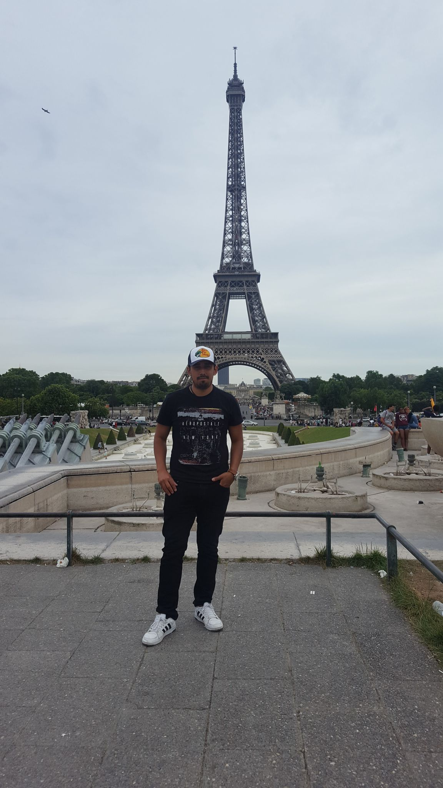
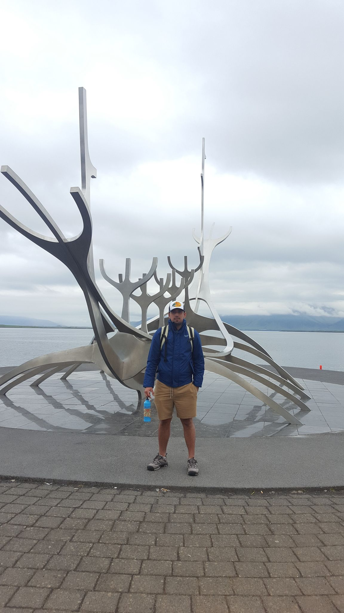
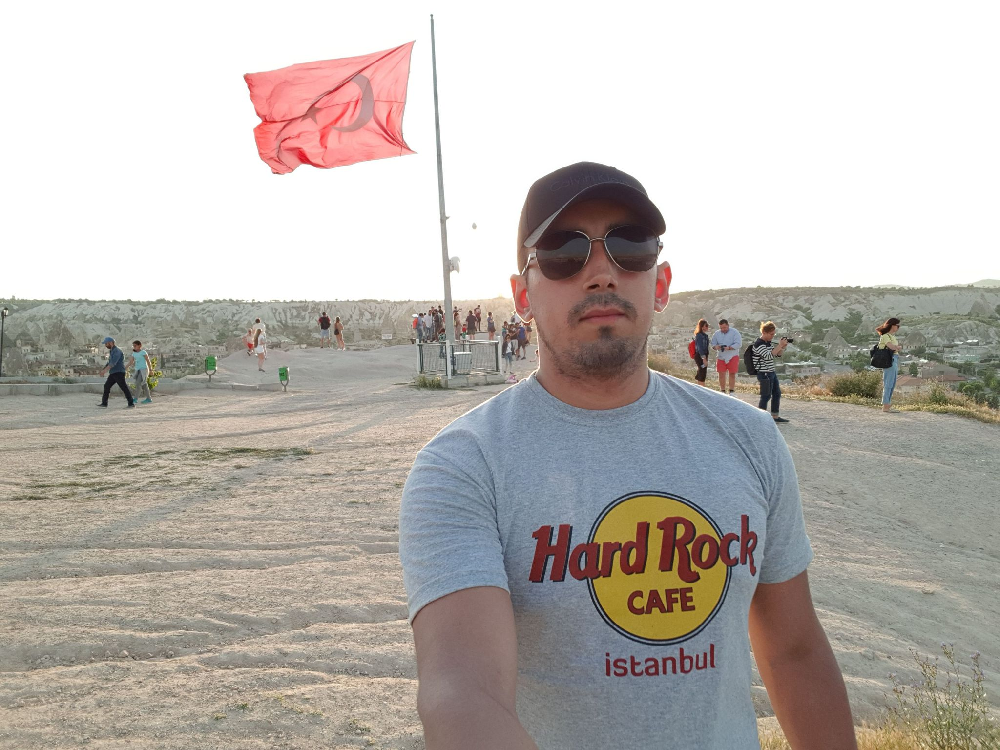
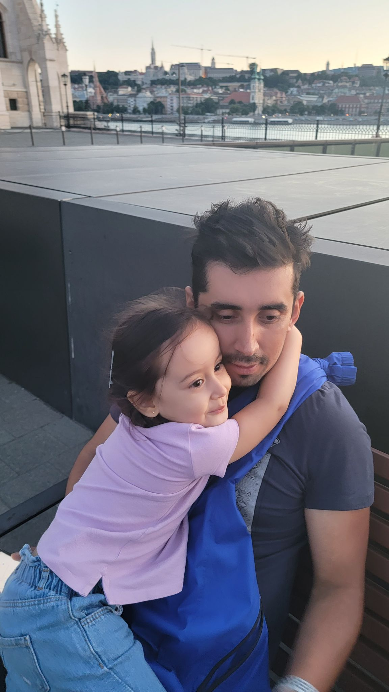
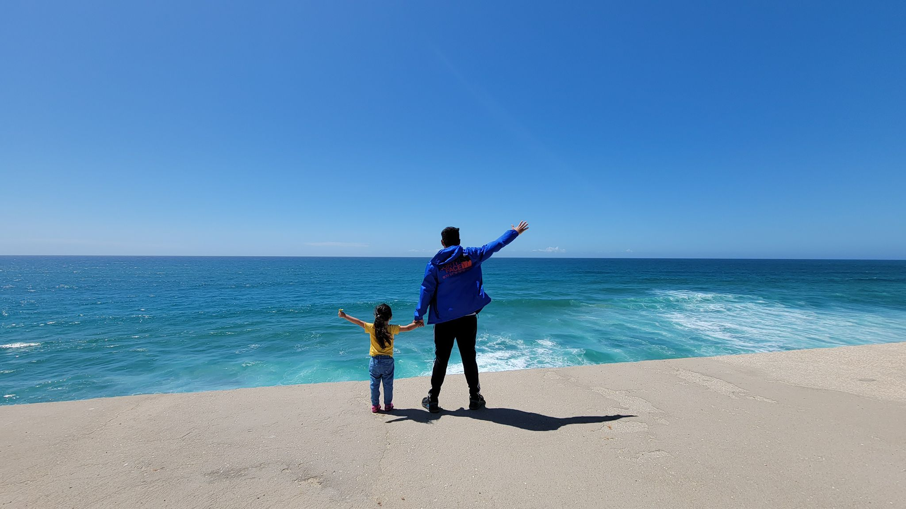
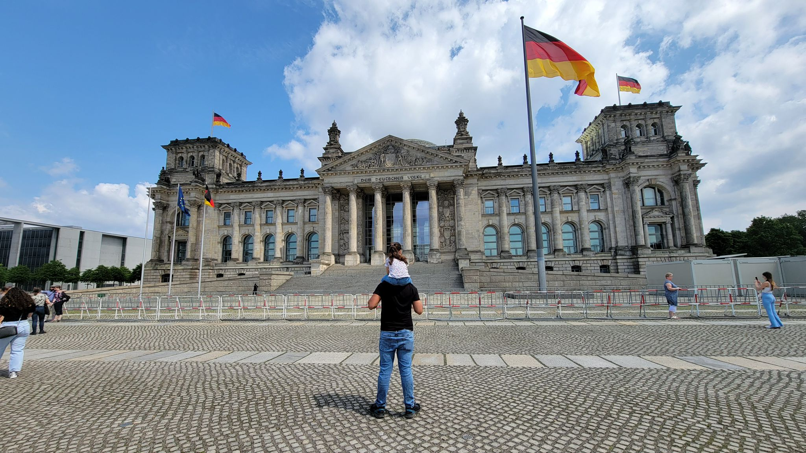

One of my hobbies is traveling
one of my hobbies is traveling and seeing new places, I really like to go to a place, try the food, meet the people and their culture. It is really nice to travel. I have known several countries such as Paris, USA and I have traveled through several countries in Europe and South America
my opinion about paris
I went to Paris twice in my life, and without a doubt it is the city that I like the most in the world, from its streets, its light, its architecture, magnificent museums, attractions all year round ... it will never disappoint you to spend your days In Paris, the bars and restaurants are perfect, and its boutiques are a perfect example of Parisian glamor. In its streets you can breathe art, history and romance. What would you recommend? You cannot pass through Paris without taking a walk along the banks of the Seine, until you reach the D 'Orsy museum (a beautiful museum in its architecture as well as in the works that adorn its rooms), then a relaxed meal in one one of the beautiful "bistro" that abound in the city, contemplate the views of Paris from Mont Matre, or have a delicious cocktail at the best hotel in Paris (and one of the most emblematic in the world), the Ritz. If you love history, a visit to the Concergerie will transport you to the last days of Queen Marie Antoinette. Although if you have a day to spare, it is unthinkable not to spend the day in Versailles, visiting the palace, the Triagnones, and why not, have a picnic in the beautiful gardens of Versailles, where you can spend a dreamy afternoon, exploring its nooks and crannies. precious sources; and you can even rent a bike right there, so that the ride is unforgettable ... I could go on talking about this wonderful destination for hours, I find it inspiring and of unparalleled beauty. Enjoy it as much as I did, and without a doubt, I will continue to do so !!!!
 What do I like the most about traveling?
Traveling as a family strengthens ties and ties, strengthens family relationships and is also a good excuse to share a beautiful experience with your loved ones. I really like to travel because I can share very nice moments with my daughter, she gets very happy when we travel, I want her to know the world as I do, traveling is resting and sharing with those she loves the most
   Countries and places to which I have traveled
| Country | town | touristic place |
|---|---|---|
| francia | paris | Eiffel Tower |
| Colombia | cartagena | the walled city |
| Centro comercial Moctezuma | Francisco Chang | Mexico |
| canada | toronto | kensington market |
| colombia | san andres islad | yonycay |
| pain | madrid | |
| portugal | Yoshi Tannamuri | Canada |
| Magazzini Alimentari Riuniti | Giovanni Rovelli | Italy |
| Germany | Simon Crowther | UK |
| mexico | Marie Bertrand | France |